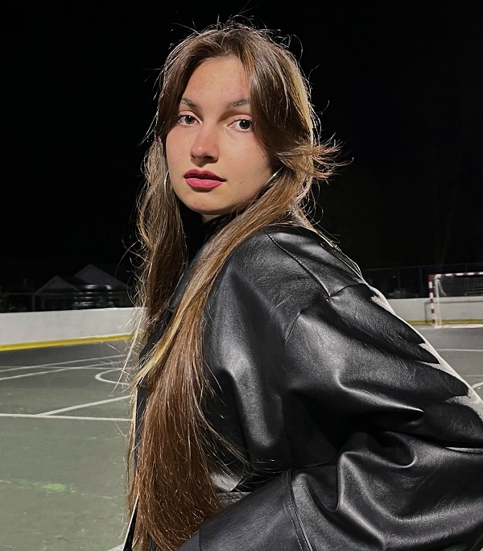

Дата рождения: Май 2004
Страницы в интернете:
Родилась в мае 2004. Училась в школе №10 поселка Монетный, Березовский муниципальный округ (около Екатеринбурга); дополнительно ходила в Детскую школу искусств. В школе добивалась успехов в художественных конкурсах. В 2016 ездила в Казань на фестиваль-конкурс Казанские узоры, где победила в нескольких номинациях, а также получила специальный приз от жюри за свою авторскую куклу. В 2018 заняла I место на конкурсе Красота Божьего мира, организуемом Екатеринбургской епархией (работа Храм в честь Успения Пресвятой Богородицы). Школу закончила с золотой медалью, единственная в своей школе, а всего золотых медалистов в поселке было двое (https://vk.com/wall-199227093_2427).
В 2022 поступила на ФХО НТГСПИ (Изобразительное искусство и дизайн). В институте играет в форуме-театре "Диалог". Форум-театр - это современный вид театра, в котором зрители являются участниками представления, могут обсуждать тему спектакля с актерами и влиять на происходящие события. Объединение Форум-театр «Диалог» в НТГСПИ - это любительский театр, в котором играют студенты, в основном не специализирующиеся на театральном икусстве. Темы их постановок - трудности молодых педагогов("Молодой специалист"), травля в школе ("Травля") и проблемы в романтических отношениях («Абьюз»). Объединение выступает в различных образовательных учреждениях области, помимо Тагила, в Екатеринбурге и Нижней Туре.
В январе 2023 заняла III место в номинации "Живопись" на конкурсе-выставке учебно-творческих работ студентов ФХО.
В 2024-2026 участвовала во Всероссийском конкурсе учебно-творческих работ студентов Искусство реальности. Результаты:
2024
2025
2026
Около июля 2023 начала заниматься татуировками, с февраля 2024 работает в студии DOM Tattoo.
В феврале 2024 участвовала в выставке-конкурсе "Арт-Дуэль" в Екатеринбурге. Подробнее см. в разделе об Анастасии Арнаутовой.
В 2025 победила во всероссийском конкурсе Новогодний календарь, ее картина Русский быт была выбрана как изображение для сентября.
В марте 2026 ездила на фестиваль Sverdlovsk Tattoo Fest в Екатеринбурге (участвовали другие мастера из DOM Tattoo).
С 2026 Анастасия - заместитель руководителя по вопросам медиагруппы в Форуме-театре "Диалог". В мае 2026 театр выступает в арт-пространстве "Маяк" в Екатеринбурге с постановкой «Абьюз».